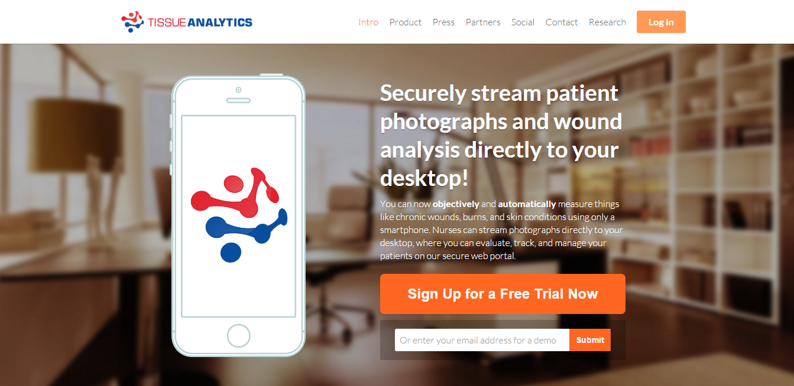
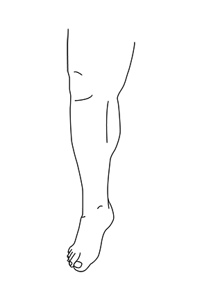
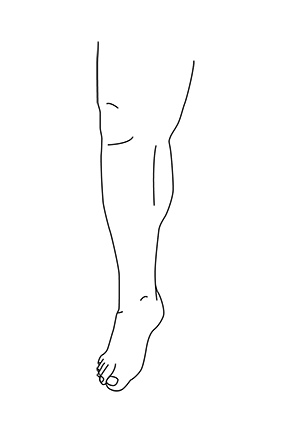
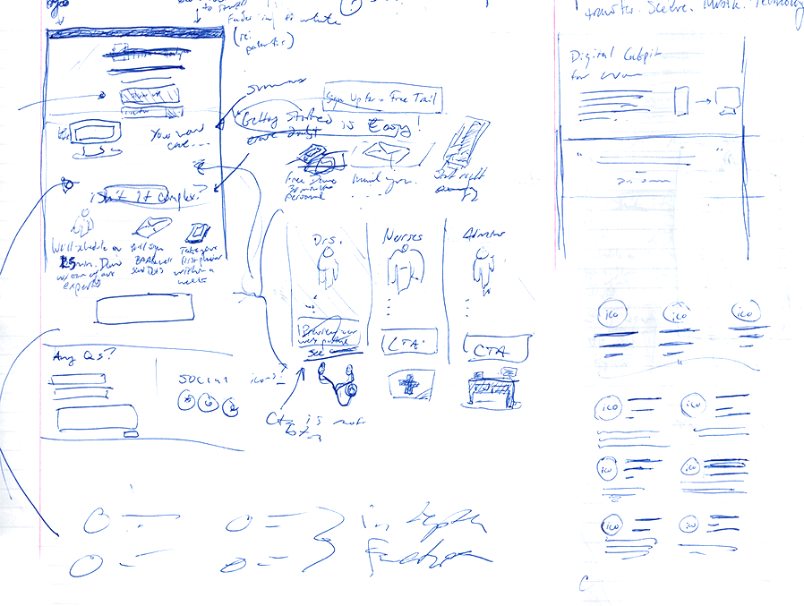
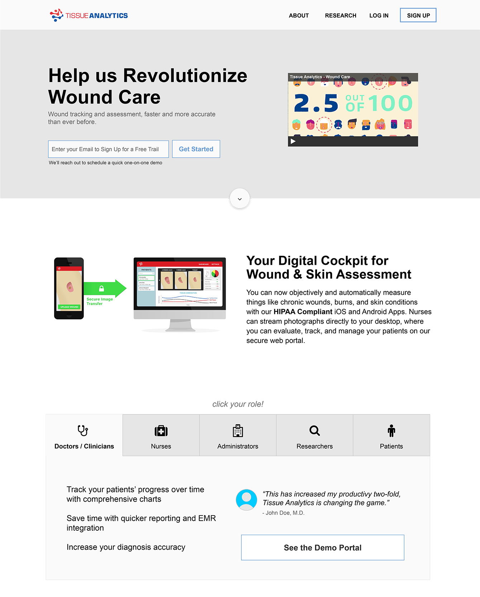
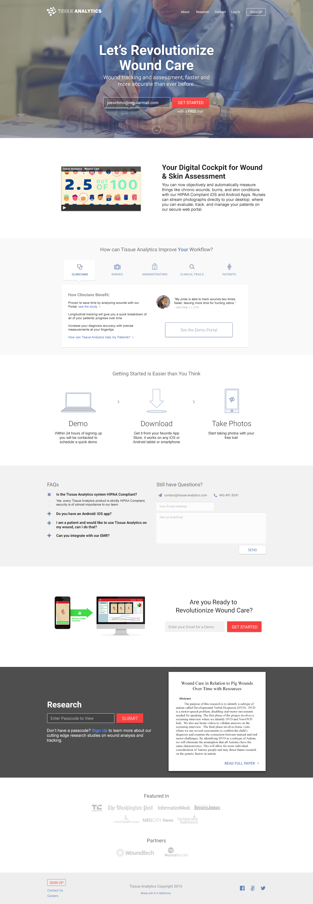
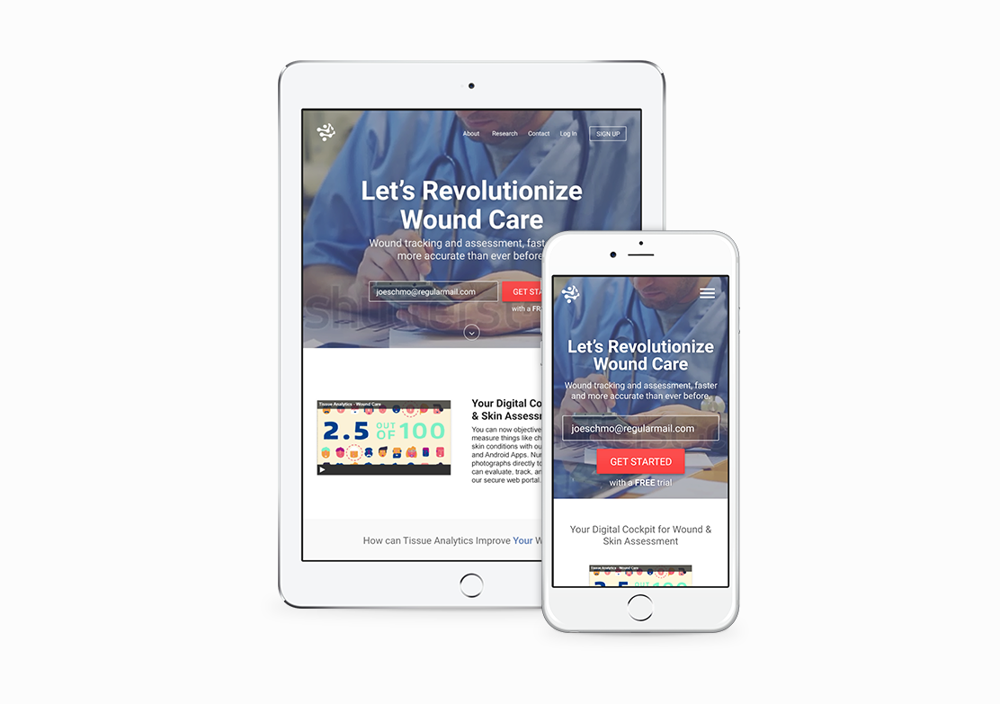
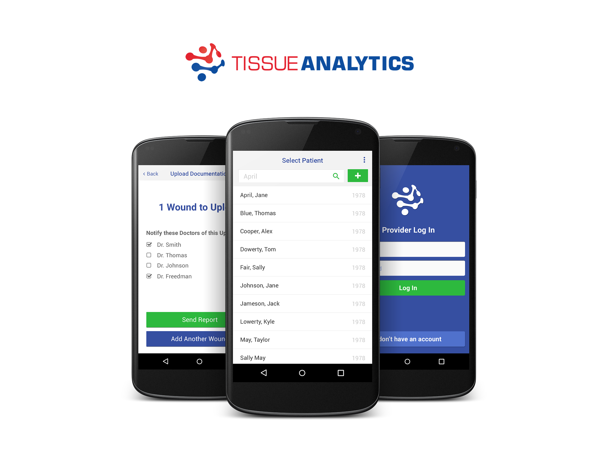
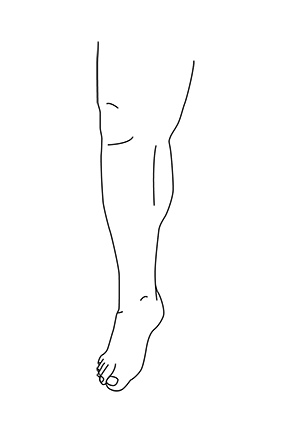

Redesigning the Tissue Analytics Landing Page
August, 2015
Tissue Analytics is a startup focused on developing a mobile medical app for the evaluation of chronic wounds and burns. As we were beginning to onboard our first trial customers, the Tissue Analytics landing page became one of the gatekeepers between an interested visitor and a paying customer.

Team: I was the only designer at the company, so I used my team to get feedback and ask questions throughout the design process.
Experience: I had not designed a full web landing page before, so research and competitive analysis would drive some decisions.
 I illustrated a series of silhouettes to be used on Tissue Analytics mobile app. A nurse would take a photo of a wound, then select the part of the body (the right leg is shown here) where the photo was taken.

I illustrated a series of silhouettes to be used on Tissue Analytics mobile app. A nurse would take a photo of a wound, then select the part of the body (the right leg is shown here) where the photo was taken.

Before the redesign
The website was generated from a template, and the content and interactions were not created with the product or the user in mind. Our current landing page was not responsive, and by looking at our analytics, I discovered that it was receiving 10% of traffic through mobile devices. I determined that this was enough reason to create a responsive website. UX pitfalls were scattered throughout the website including dead-end flows, off-target copy, and unnecessary clutter.Challenges
Time: I had about 3 weeks to complete the redesign since no other designer would be hired to pick up the project once I left. I used a Jira Kanban board to keep myself on schedule.Team: I was the only designer at the company, so I used my team to get feedback and ask questions throughout the design process.
Experience: I had not designed a full web landing page before, so research and competitive analysis would drive some decisions.
Process
After talking to a number of team members, I found out what users we would target for a free trial, and what information they would be looking for. I looked at competitors' websites as well as documentation on creating landing pages with high conversion rates. First I completed some low-fidelity sketches to allow rapid iteration on the concept:  I then moved into medium-fidelity wireframes:  After many iterations of the high-fidelity designs, the landing page for web was finished:  At this point I quickly learned the value of mobile-first design as I crunched full-width designs into mobile- and tablet-optimized screens:  I exported the assets, sent them to our front-end developer, and maintained open communication throughout the implementation phase. Two weeks later the website was up and running, and is live (with minor changes since I left the company) at tissue-analytics.com.What I Would Do Differently
Creating a customer journey map could have illustrated onboarding problems to stakeholders, driving design solutions for the landing page as well as for future projects.
Using a mobile-first strategy would have saved time and effort in the design process.
What Went Well
Involving the entire startup throughout the process not only led to a product that we could all be proud of, but also encouraged communication between team members that did not typically get to work on mutual projects.
The project unveiled significant flaws in the website's workflow that were solved through design.
View the Tissue Analytics landing page
Other Work from Tissue Analytics
I redesigned the Tissue Analytics hybrid mobile application for iOS and Android. I used QML (a front-end cross-platform development language) to implement these designs.  The dashboard of the Doctor/RN-facing Tissue Analytics web application, where administrators can track patient appointments and the progress of their wounds:
I illustrated a series of silhouettes to be used on Tissue Analytics mobile app. A nurse would take a photo of a wound, then select the part of the body (the right leg is shown here) where the photo was taken.



{kind=link}
{kind=link}
{kind=link}
{kind=link}
{kind=link}
{kind=link}
{kind=link}